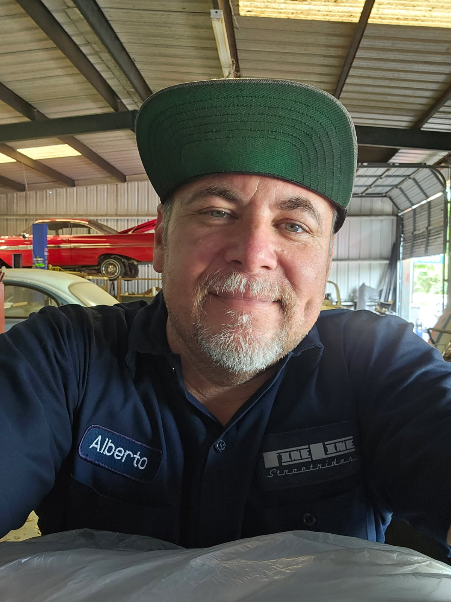

About Me
I started learning and using hydraulic systems in 1993 at the young age of 18. This allowed me to work on my personal cars and learn how to repair and troubleshoot issues. As I got older, I started working in the oil & gas field in where I worked for 25 years. During this time, I continued to install hydraulics out of my garage as a hobby. It wasn’t until 2015 that I was laid off from the oil/gas industry that I decided to open my own shop.
About Shop
For over 10 years, Fineline Streetrides has specialized in custom hydraulics, frame reinforcements, and suspension upgrades. Our skills are geared towards lowriders and mini trucks; however, we can handle any other vehicles needing any of these upgrades.
